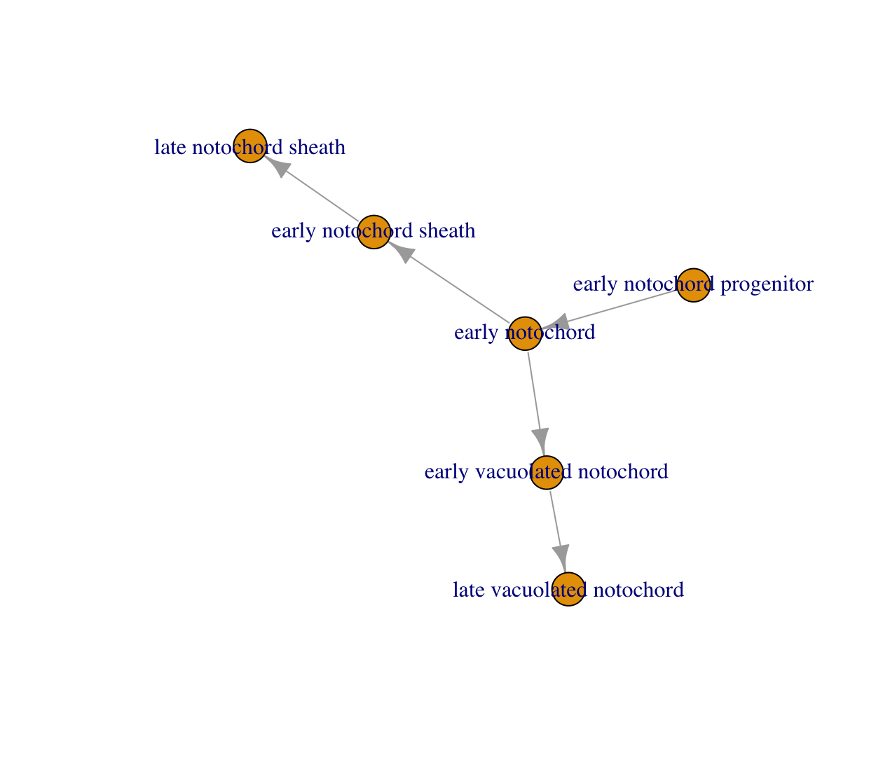
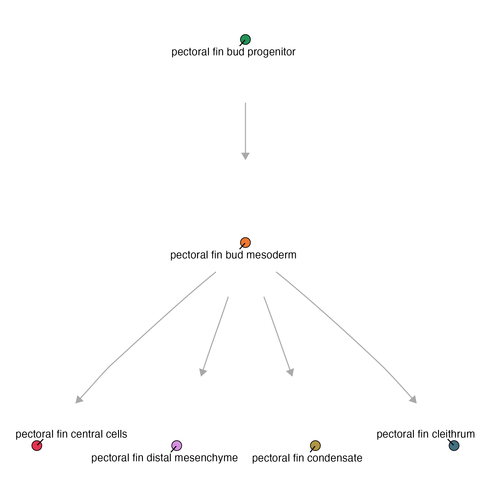

Graphs
A cell_state_graph is Platt's core data structure: a directed graph whose nodes are cell states (or cell types, or clusters — whatever grouping you assemble on) and whose edges represent putative differentiation/transition relationships between them, e.g. progenitor to derivative. Each cell_state_graph bundles that topology together with a Hooke cell_count_set, so the same object carries both the graph structure and the per-sample abundance data needed to plot, annotate, and run DEG analyses on it.
Platt's graph algorithm:

Before we build our own graphs, let's use a basic graph example. The toy graph below encodes a small notochord lineage: an "early notochord progenitor" that gives rise to "early notochord", which in turn branches into two fates — a vacuolated-notochord lineage (early -> late vacuolated notochord) and a sheath lineage (early -> late notochord sheath):
state_graph = data.frame(from = c("early notochord progenitor",
"early notochord",
"early vacuolated notochord",
"early notochord",
"early notochord sheath"),
to = c("early notochord",
"early vacuolated notochord",
"late vacuolated notochord",
"early notochord sheath",
"late notochord sheath")) %>%
igraph::graph_from_data_frame()
plot(my_graph)

Making a cell_state_graph object
new_cell_state_graph() wraps a plain igraph topology and a Hooke cell_count_set into a single cell_state_graph object, computing a default layout in the process. At minimum it takes:
state_graph- an igraph objectccs- a Hookecell_count_setobject
Once wrapped, the object can be handed directly to plot_annotations() and the other plotting functions described on the Plotting page, which read node/edge attributes straight off the graph and the abundance data off the ccs.
notochord_state_graph = new_cell_state_graph(state_graph, ccs)
plot_annotations(notochord_state_graph, node_size = 4.5)

Larger graphs
Real graphs are usually much bigger than the six-node notochord toy example — dozens to hundreds of cell states spanning many tissues — and a single unstructured layout gets unreadable fast. new_cell_state_graph() addresses this with two layout arguments:
group_nodes_by- a column in theccs/graph metadata (e.g. a tissue- or projection-level annotation) to cluster nodes by, so states from the same group are laid out near each othernum_layers- how many layers to arrange each group's nodes into, letting the layout spread a tall group horizontally instead of stacking it into one unreadable column
ref_state_graph = new_cell_state_graph(combined_state_graph,
ref_ccs,
group_nodes_by="projection_group",
num_layers=3)
plot_annotations(ref_state_graph) + theme(legend.position = "none")
The result groups nodes visually by projection_group (here, tissue), which makes a graph this size legible where the default layout wouldn't be:

Manipulating graphs
Every edge in a cell_state_graph points from an upstream state to a downstream one, so "parent," "child," and "sibling" have a precise graph meaning here: a state's parents are the states with an edge pointing into it, its children are the states its own edges point out to, and its siblings are any other states that share one of its parents. These relationships are what compare_genes_over_graph() (see the Reference DEGs page) walks to classify a gene's expression pattern at each state — e.g. whether it's activated relative to its parent, or shared across siblings.
Get the parents:
cell_state_graph- yourcell_state_graphobject (its@graphslot is what's actually passed in below)cell_state- the cell state to find the parent(s) of
get_parents(cell_state_graph@graph, cell_state)
For example:
> get_parents(notochord_state_graph@graph, "early vacuolated notochord")
returns
> "early notochord"
Get the children:
cell_state_graph- yourcell_state_graphobject (its@graphslot is what's actually passed in below)cell_state- the cell state to find the children of
get_children(cell_state_graph@graph, cell_state)
For example:
> get_children(notochord_state_graph@graph, "early vacuolated notochord")
returns:
> "late vacuolated notochord"
Get the siblings:
cell_state_graph- yourcell_state_graphobject (its@graphslot is what's actually passed in below)cell_state- the cell state to find the siblings of
get_siblings(cell_state_graph@graph, cell_state)
For example:
> get_siblings(notochord_state_graph@graph, "early vacuolated notochord")
returns
> "early notochord sheath"
get_all_parents() is the recursive counterpart of get_parents() — it walks all the way up to the root ancestors of a cell state instead of just the immediate parent.
Constructing a graph
The graphs so far were built by hand from a data.frame of edges. In practice, you'll usually want Platt to infer the graph directly from a time-series cell_data_set (cds): fitting a cell count model over each pair of adjacent timepoints and drawing an edge wherever one state's abundance dynamics support it being the source of another's.
cluster_cells() must be run on the cds before graph assembly, regardless of what cell_group you assemble on — assembly relies on the partitions it computes to link separate connected components of the graph together.
cds = cluster_cells(cds, random_seed = 42, res=1e-3)
run_wildtype_assembly() fits the wild-type (control) model and assembles a state graph from it. The arguments used below:
partition_name- a label appended to every node name in the resulting graph, so graphs from different partitions/tissues can be merged without node-name collisionssample_group- the column identifying which embryo/sample each cell came fromcell_group- the column of state labels to assemble the graph on —"cell_type"here, rather than the fine-grained cluster labels used earlier in this pageinterval_col- the column giving each cell's timepointcomponent_col- the column of connected-component/partition labels (populated bycluster_cells()above) used to link otherwise-disconnected parts of the graphperturbation_col/ctrl_ids- which column holds the perturbation label, and which of its values count as controlsnum_threads,batch_col- parallelize model fitting across cores, and correct for the batch each embryo was processed in
We build the graph directly on cell types, starting with the wild-type (control) samples...
cell_type_wt_graph = run_wildtype_assembly(cds,
partition_name = "pectoral fin",
sample_group = "embryo",
cell_group = "cell_type",
interval_col = "timepoint",
component_col = "assembly_group",
perturbation_col = "perturbation",
ctrl_ids = c("ctrl-inj"),
num_threads = 6,
batch_col = "expt")
...then, using that wild-type graph as an anchor, fit the mutant/perturbation samples on top of it. run_perturbation_assembly() takes the same arguments as run_wildtype_assembly(), plus wt_graph — the wild-type graph it anchors the perturbation fit to:
cell_type_mt_graph = run_perturbation_assembly(cds,
wt_graph = cell_type_wt_graph,
partition_name = "pectoral fin",
sample_group = "embryo",
cell_group = "cell_type",
interval_col = "timepoint",
component_col = "assembly_group",
perturbation_col = "perturbation",
ctrl_ids = c("ctrl-inj"),
num_threads = 6,
batch_col = "expt")
If there's no perturbation data to fit, run_perturbation_assembly() just returns the wild-type graph back.
Each call returns a single igraph object (or NA if fitting fails), rather than a data frame — cell_type_wt_graph is the wild-type state graph, and cell_type_mt_graph is the mutant/perturbation graph assembled on top of it. You can go straight from either graph to a cell_state_graph:
pf_graph = cell_type_mt_graph
pf_ccs = new_cell_count_set(pf_cds, cell_group = "cell_type", sample_group = "embryo")
pf_csg = new_cell_state_graph(pf_graph, pf_ccs)
plot_annotations(pf_csg)

For more information about plotting on a Platt graph, see our Plotting page
Next: see Reference DEGs to run differential expression across the graph you just built.